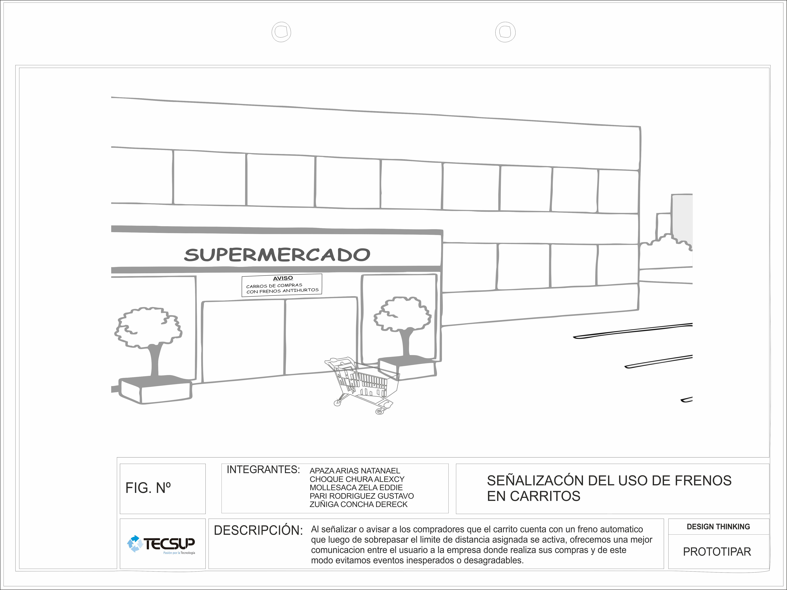
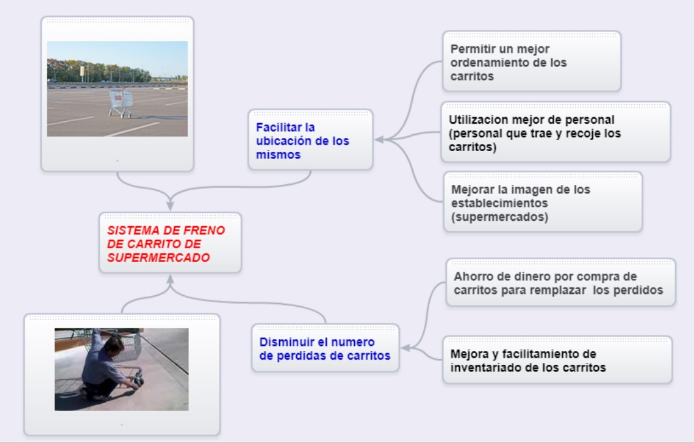

Language: English
Llegados a este punto es donde podemos dejar fluir toda la creatividad del grupo. Es muy importante no dar soluciones o ideas a nuestro reto hasta que no llega este momento, en el que ya tenemos perfectamente definido el punto de vista del usuario.
MEJORAS EN EL PRODUCTO
Señales y Local
Notamos que muchos de los usuarios no se percatan de que
 Documento - Señales y LocalINTERACCION DEL PRODUCTO CON EL USUARIO
Aquí vamos a interactuar nuestro producto con el usuario, de manera que luego de la experiencia que tuvo el usuario nos brinde sus dudas, críticas constructivas, ideas nuevas o aspectos que resaltar sobre nuestro producto. De este modo gracias a esa información recopilada se podrá realizar mejoras en nuestro producto haciéndolo más aceptable y cómodo para su uso; en nuestro caso explicaremos brevemente la función de nuestro frenos para los carritos de compras y luego procederemos con la realización de preguntas que sean útiles para nuestra malla.
MALLA RECEPTORA
Aquí recopilamos la información obtenida de las entrevistas y destacamos los puntos importantes que se mencionaron; así de este modo podremos saber que mejoras necesita nuestro producto.
Malla ReceptoraDescomposición Funcional
La descomposición funcional se refiere ampliamente al proceso de resolución de una relación funcional en sus partes constituyentes, de tal manera que la función original se puede reconstruir de las partes en función de la composición.
